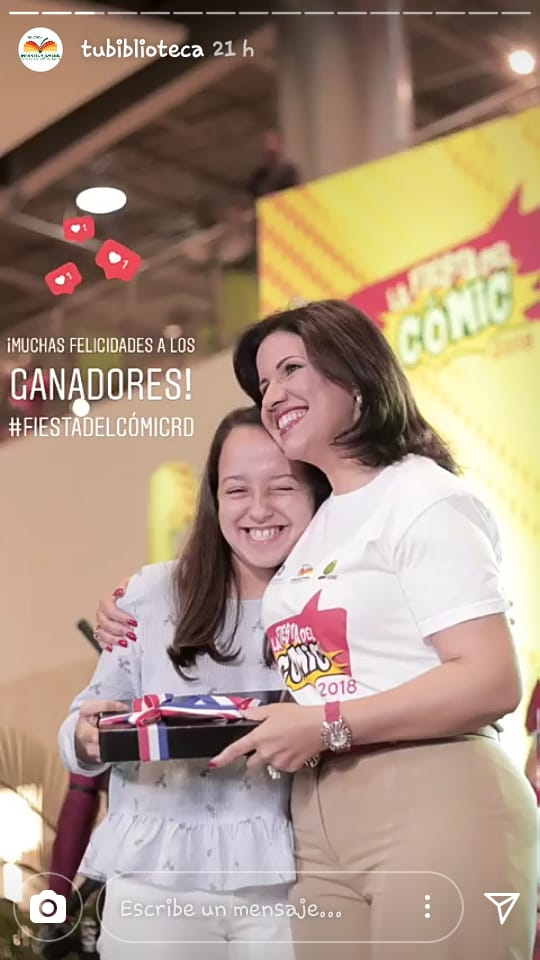
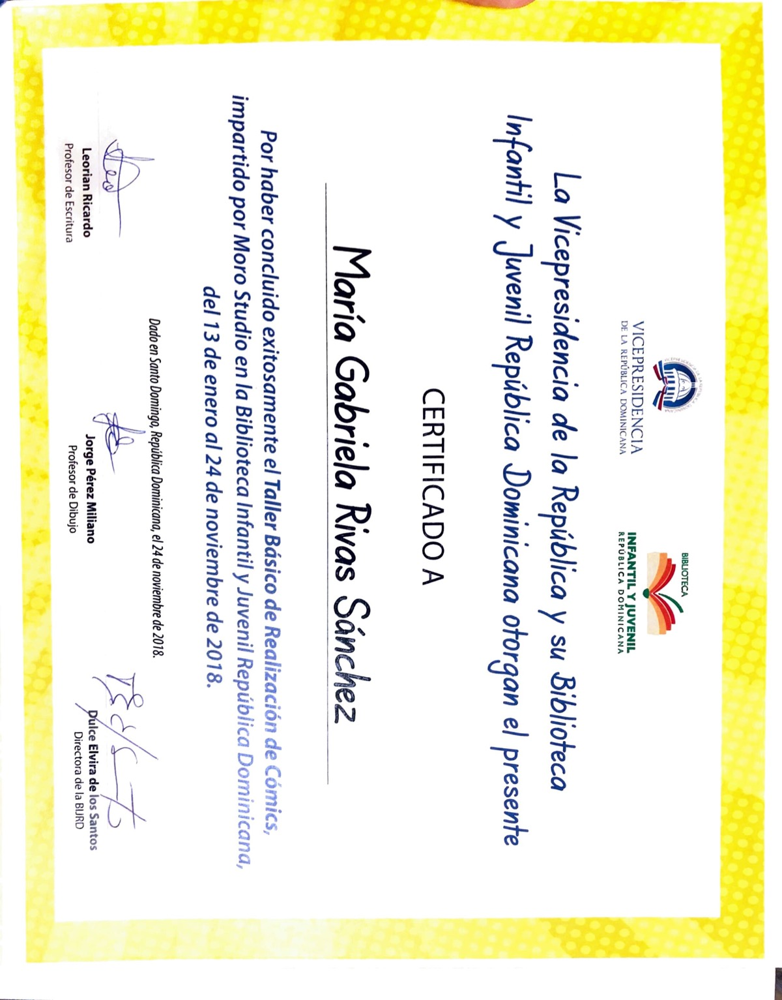
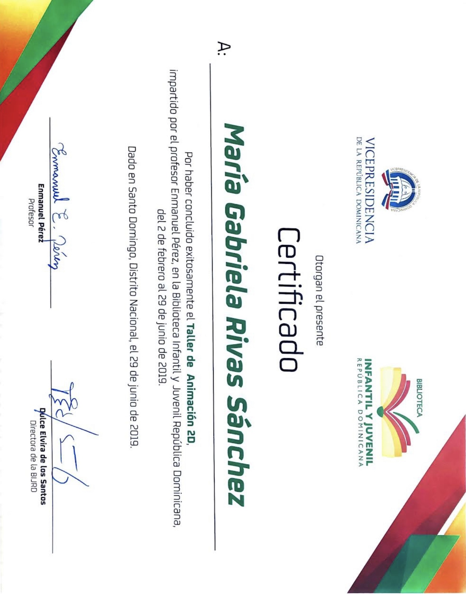
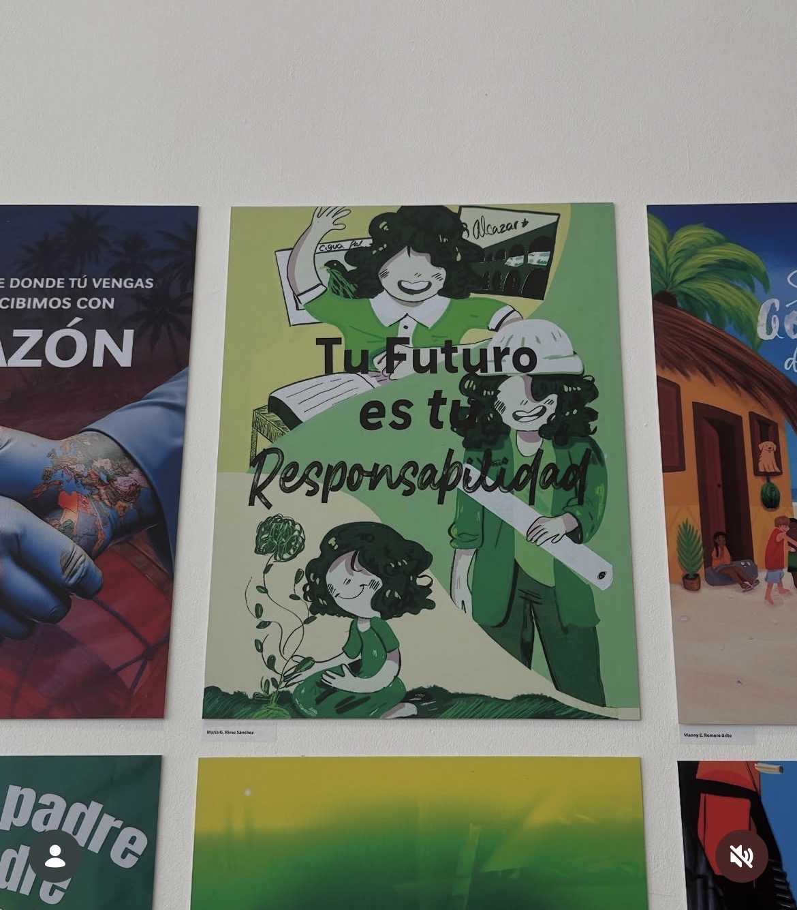
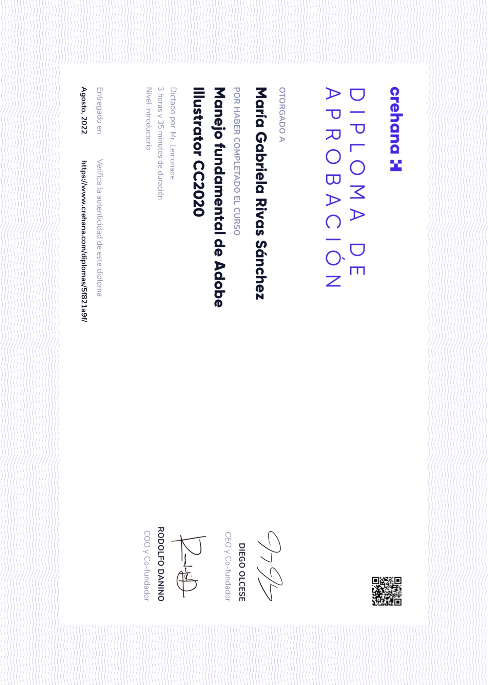
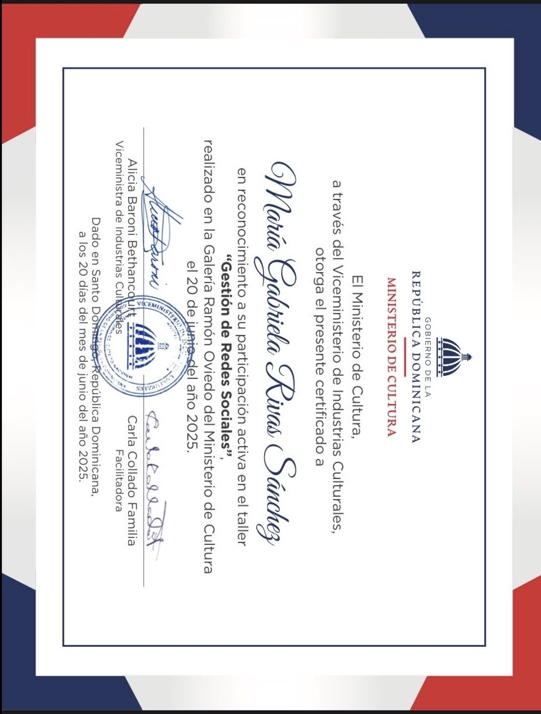
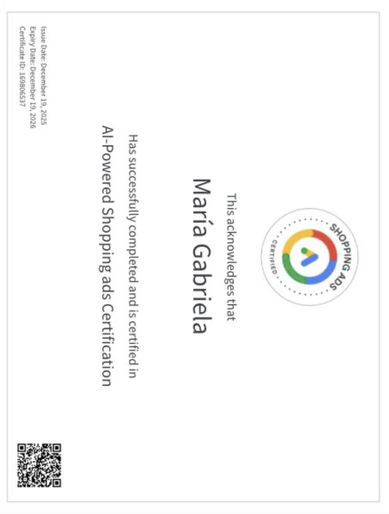

Actualmente me encuentro estudiando en la universidad UNAPEC, diseño gráfico. Dios mediante, me graduo en Octibre! :). Pero esto no ha sido un impedimento, para seguir creciendo y aprendiendo nuevas cosas...
Aprendí los fundamentos y bases de como hacer un cómic. No simplemente ilustrar y punto, sino que, adquiri conocimientos de como contar una buena historia y que esta sea plasmada adecuadamente en el papel.
La continuacio2n del taller de comics, pero esta vez le subimos de nivel. Aprendi los conceptos básicos y fundamentales de la animación 2D. Junto con programas de animación, como Flipaclip y Procreate.
Este programa fue el que me impulso a tomar mi decisión final sobre involucrarme en el mundo del diseño. Aprendi los fundamentos del diseño gráfico y expandio mi mente a un mundo que habia limitado solamente con la ilustración.
Este curso me permitió dominar las bases de Adobe Illustrator, herramienta fundamental en el diseño gráfico (ahora no suelto a Illustrator!).
Este curso me permitió aprender a crear ilustraciones para marcas, y como estas pueden ser un gran recurso para la identidad visual de una marca.Un curso, bastante divertid y práctico, me enseño que la ilustración le da un toque personal y único a las marcas.
Este curso me permitió aprender a crear estrategias de contenido para redes sociales, y como estas pueden ayudar a las marcas a crecer y conectar con su audiencia. Aprendi sobre la importancia de la consistencia, el engagement y el análisis de métricas para mejorar el rendimiento en redes sociales.
Este curso me permitió aprender a manejar las redes sociales de manera efectiva para emprendedores, y como estas pueden ayudar a los negocios a crecer y conectar con su audiencia. Aprendi sobre la importancia de la planificación, el contenido de calidad y el análisis de métricas para mejorar el rendimiento en redes sociales.
Este curso me permitió aprender a crear anuncios de compras impulsados por IA, y como estos pueden ayudar a las marcas a llegar a su audiencia de manera más efectiva. Aprendi sobre la importancia de la segmentación, el contenido de calidad y el análisis de métricas para mejorar el rendimiento de los anuncios de compras impulsados por IA.
Soy apasionada por el storytelling visual y aspira a trabajar en proyectos que hagan una diferencia positiva. Me fascina contar historias innovadoras mediante el diseño gráfico. Crear experiencias, inmersiones y que el espectador pueda ser participe del diseño, vivirlo, sentirlo y disfrutarlo, es asombroso.
Actualmente, quiero mejorar mis habilidades en diseño web y proyectos UX/UI. Sin embargo, mis fuertes son diseño y contenido para redes sociales, edición de video y motion graphics. Yeah tengo mucha tela por donde cortar, pero eso es lo divertido de esta carrera! En adición, de que tengo habilidades en la ilustración, cosa que me apasiona desde que tengo memoria.
Asi que si...soy una diseñadora gráfica que quiere volverse experta y la mejor en todo lo que hace.
Me fascinan las tipografias. Tengo más de 1,000 fonts, y siento que no son suficientes jejejeje






